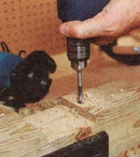

We used eye bolts to fasten press supports to front legs, locating eyes on the outer face of the legs and bolting on supports through the inner, threaded end. Then we ran 28"" lengths of 1/2"" steel threaded rod through the eyes. Heavy bolts were tightened behind flat washers at the tap and bottom